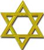

Hovedsymbolet
Det teosofiske segl bestâr af fem forskellige symboler, som hver
især kan føres millioner af àr tilbage til længst forsvundne
civilisationer. Dette sammensatte symbol har relation til den
nye tids energi, idet det teosofiske segl i sin helhed skal
udtrykke sammensmeltningen af det højeste åndelige og det
jordiske.
Hovedsymbolet
Klik for at læse mere
Symboler er en måde at kommunikere på. Der er mange former for symboler. Vi møder dem overalt, hvor varer
sælges, og vi kender de politiske symboler som f.eks. hammer og segl. Det kinesiske og japanske skriftsprog
er symboler, som ofte har flere betydninger. Noder er musikalske symboler, og endelig har vi den lange række
af kemiske og matematiske symboler. Disse symboler er det, vi kalder eksoteriske symboler, ydre og
informerende symboler, som forenkler kommunikation mellem fagfolk og signalerer et bestemt budskab til en
større kreds.
De ældste symboler, vi kender, er de religiøse og åndelige symboler som f.eks. det kristne kors, det
ægyptiske hankekors og astrologiens mange dybt ladede symboler. Denne type symboler danner en overgang til
det, der kaldes de esoteriske symboler.

Slangen eller cirklen
Klik for at læse mere
Slangen eller cirklen
Først er der slangen eller cirklen. Cirklen er evighedens
symbol. Den er uden begyndelse og ende. Den symboliserer også
det absolutte, det umanifesterede univers, som potentielt
indeholder alle former.
Slangen er det mest gådefulde af alle symboler. Vi finder det i skabelsesberetningen som fristeren,
symbolet på modstandskræfterne og i den anden ende som den højeste spirituelle visdom. I det teosofiske
symbol sluger slangen sin egen hale. Den er selv-født, symbolet på liv og udødelighed.
Den sekstakkede stjerne
Den sekstakkede stjerne eller de sammenflettede triangler viser
den uadskillelige enhed mellem and og stof.
Den sekstakkede stjerne

Klik for at læse mere
Den hvide triangel, der peger opad, symboliserer menneskets højere legemer, mens den mørke triangel med
spidsen nedad symboliserer det fysiske, astrale og mentale legeme. Ligevægten mellem disse to triangler er
det foreløbige mål for den menneskelige evolution – ånd og stof i balance. Den sekstakkede stjerne kendes
som Kong Salomons segl og davidsstjernen. Trekanten er også symbolet på den åndelige udviklingsvej,
pyramiden som skal bestiges. I den amerikanske dollarseddel finder vi pyramiden med øjet i spidsen, Shivas
altseende øje.
Hankekorset
Klik for at læse mere
Hankekorset
Hankekorset er T-formet med en cirkel ovenpà. Tau er det græske
ord for T.
I forbindelse med pyramideindvielserne blev neofytten lagt i sarkofagen i kongens kammer. Den var på én
gang en kiste og symbolet på livmoderen. I tre dage og nætter blev aspiranten frigjort fra sit fysiske
legeme og skulle udføre opgaver i de laveste områder af astralplanet, og hvis han bestod prøven, stod han op
og fik taukorset, udødelighedens symbol, i hænderne som tegn på, at han var indviet.
Taukorset symboliserer ånden, der er steget ned i stoffet og korsfæstet i kød og blod, men det er også
symbolet på genopstandelsen, hvor menneskets ånd overvinder stoffets træghed og frigør sig fra dette. Når
Taukorset er placeret inden i de sammenflettede trekanter som det centrale i hele seglet, er det for at
illustrere den guddommelige plans sejr gennem mennesket.
Svastikakorset
Svastikorset er på toppen af det teosofiske segl, og må ikke
forveksles med hagekorset, som er resultatet af nazisternes
misbrug af dette ældgamle, heilige symbol.
Svastikakorset
Klik for at læse mere
Svastikakorset er det eneste symbol, som ikke er statisk. Det drejer rundt, det er livshjulet, symbolet på
solsystemernes og atomernes evige bevægelse. Det er symbolet på chakraerne, der hvirvler rundt, og specielt
rodchakraet, som har fire arme eller blade, og som repræsenterer viljekraften, der driver udviklingen frem
gennem de forskellige stadier.
Svastikaet er også symbolet på de fire elementer, de fire årstider, de fire verdenshjørner og de fire
naturriger. Det er fundet overalt på jorden i alle religioner, undtagen kristendommen og islam. Det er
mejslet ind på de store stenstøtter, der står på Påskeøen og siges at stamme helt tilbage fra det længst
forsvundne kontinent Lemurien.
AUM

Klik for at læse mere
AUM
De tre sanskrit bogstaver, det hellige ord AUM. Aum er symbolet
pâ essensen i hinduismen. Aum betragtes som den helligste
stavelse, den første lyd fra Gud - og lyden hvorfra alle andre
lyd opstâr, om det så er musik eller sprog.
Aum (ohm) er symbolet på essensen i hinduismen. Aum betyder enhed med Gud og det at forene det fysiske med
det spirituelle. Det er også symbolet på Gud og hans 3 former som skaberen (Brahma), opretholderen (Vishnu)
og ødelæggeren (Shiva) Treenigheden, den hinduistiske livsopfattelse.Aum betragtes som den helligste
stavelse, den første lyd fra Gud og lyden, hvorfra alle andre lyde opstår, om det så er musik eller
sprog.Aum er tidløs, indeholder fortid, nutid og fremtid.